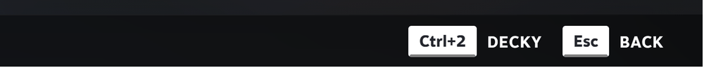

DeckyShortcut
Big PictureAdds Ctrl+2 DECKY to the bottom shortcut bar, immediately left of F9 OPTIONS, and opens the Decky panel from the keyboard, the mouse or a click on the legend.
- The legend is a clone of Steam's own legends: same markup, same font, same spacing, so Valve's visual updates apply to it too.
- Ctrl+2 or a click toggles the Decky tab of the Quick Access Menu, and the legend is re-inserted whenever Steam rebuilds its bar.
- Nothing is patched in Steam and no file is modified: the legend is cloned at runtime inside the visible Big Picture window.